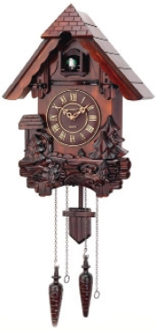
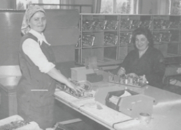

Küçük apartmanların dış cepheleri çoğunlukla boyasız halleriyle dururdu. (Sonradan BTB-Mozaik döşemeler moda olmuştu,) Evlerin iç duvarları genelde plastik boyalı olur, kimi evlerde ise Duvar Kâğıdı tercih edilirdi.
Seksenlerin modalarından birisi de ev yahut işyerlerinin büyük bir kısmının duvar kâğıtları ile kaplanmış olmasıdır. Bir dönem evi kâğıt olmayanlar kendilerinde eksiklik hissetmiştir.
Küçük çocuklar duvarları kalemleriyle çizer, o kâğıtlar sökülür, tekrar yenileri yapıştırılırdı. Zahmetli bir işti duvarları kâğıtla kaplamak. Sonradan sanki bir emir gelmiş gibi, hepsi ortadan kalktı gitti.
Son gidenlerden biri de bizim evdekidir büyük ihtimal, hikâyesi ise şudur; resme bir miktar yeteneğim vardır. Özellikle karakaleme. Fakat, herkesin yaptığı gibi kâğıtlara değil direk duvara çizerdim. Annem, “Duvarları saten yaptıracağım,” diye konuşmaya başlayınca, aramızda çizmiş olduğum resimlerin sökülüp sökülmemesi konusunda bir tartışma çıkacağı belli olmuştu. Tartışmalar annemin galibiyeti ile sonuçlanmış, bir gün içinde onca emek verdiğim çizimler, sanat düşmanı, zalim boyacılar tarafından sökülmüştü. Eve girip, o boş duvarla karşılaşınca, ne kadar üzüldüğümü anlatamam. O günden sonra çok uzun seneler ne duvara ne de başka bir yere çizip de tamamladığım bir resim olmadı.
Ev boyama işlerini genelde aileler kendi içlerinde çözerlerdi. Tamam, boyacılar vardı tabii ama bir kısım memurlar da mesai saatleri dışında bu işlerle uğraşıp (özellikle duvar kâğıdı) yan gelir elde ederlerdi. Esasında yan gelir maaşlarından fazlaydı. Bu arada; çoğu evin çatısı akıp duvarlar su sızdırdığı için kâğıtların bazı yerleri kalkar ya da boyalar dökülürdü.
Pencere ve kapılarda ahşap tercih edilirdi çoğunlukla. Bir ara alt katta oturanlar demir parmaklıklar koydurmuşlardı evlerinin pencereleri önüne. Bahçeye açılan kapılarda da genellikle açılır kapanır bir düzenekle yine demirden yapılma bir malzeme vardı. Birbirlerine çapraz şekilde bağlı olan bu demir doğrama büyük bir akordeonu andırırdı. Dükkânlar bir süre sonra alimünyum doğramaya geçmişler, vitrinler genişlemeye başlamıştı.
Duvarlarda mutlaka Saatli Maarif Takvimi, Türkiye Gazetesi Takvimi ya da Diyanet’in yaptırdığı takvimlerden biri ve bir saat olurdu. Kimileri evlerine Guguklu Saatlerden asardı. Bu saatlerin içinde bulunan kuş maketi, her saat başı açılan kapıdan minik gagasını uzatarak öterdi. Garip bir düzeneği vardı bu saatlerin, altlarından birkaç zincir salınır, kurulmaları bu zincirler vasıtasıyla olurdu. Guguklu saatler bulundukları evi zengin gösterirlerdi.

Her evde olmamakla birlikte Ağlayan Çocuk Posteri ve duvar halıları da asılırdı evlerin duvarına. Bunlar çeşitli tasvirler barındırırlardı. Birkaç geyik su içerken, tavus kuşları en şatafatlı halleriyle kanatlarını açmışken, birkaç kadın kahvelerini içerlerken, köpekler bir masanın etrafında dizilmiş, ellerindeki iskambil kâğıtlarına bakarken resmedilirlerdi. Mekke-Medine resimlerinin işlenmiş olduğu veya Hz. Ali’yi temsil eden dokuma türü halılardı bunlar. Doksanlara yaklaşırken ortalıktan çekilivermiştiler. Belki Anadolu’nun bazı köy kahveleri ve evlerinde rastlanabilir ama eskisi kadar görmek mümkün değildir.
Bunların dışında duvarlarda düğün fotoğrafları, sünnet düğünlerinden, pikniklerden kareler, gidilen özel bir yerden görüntüler olurdu. Yurtdışında çalışan bir yakını olan aileler, onları iş yerlerindeyken gösteren fotoğraflarını asarlardı duvarlarına. Altlarında ya da fotoğrafların arkasında o anki durumlarını açıklayan notlar olurdu.

Almanya’da fabrikada çalışan teyzem (ayaktaki) ve arkadaşı